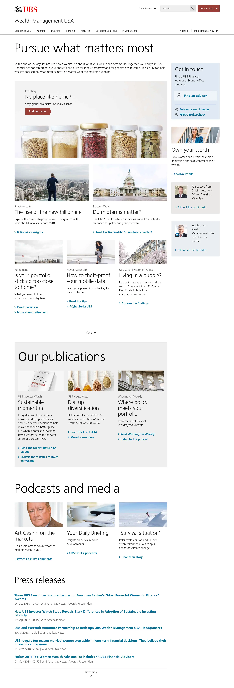

Creative direction | UX | Visual design
Website redesign
The landing page for UBS’ Wealth Management Americas division hadn’t been updated in several years and its age was showing. The site, seen below, was not responsive, had poor accessibility and information was dense, confusing, redundant, and minimized what was easily WMA’s core strengths: research, analysis and advice. The structure of the site was built around business units rather than client need.
The strategy was to connect with the visitors and clients by putting their needs at the forefront, highlighting UBS’ world-class advisory capabilities. The new WMA site was all about answering the questions that clients had on their minds when visiting the site, then directing them to the relevant business group.
Working with our writers, the site’s content was condensed and made more "snackable" while the overall structure of the site was simplified making for easier navigation and better wayfinding.
Structurally, my team and I worked with the Platform team in Zurich to update the CMS templates to be responsive and more accessible, meeting WCAG 2.0 Level AA guidelines.
We applied these same principles of shorter, more easily digestible content with more striking (and brand-consistent) visuals across the entire UBS WMA site. The result was something that more aligns withthe users’ expectations and meets the three main criteria of good UX/UI design:
Easy to look at, easy to learn, easy to use.
All told, the site saw a substantial increase in engagement and return visits across all of Wealth Management America's digital footprint.